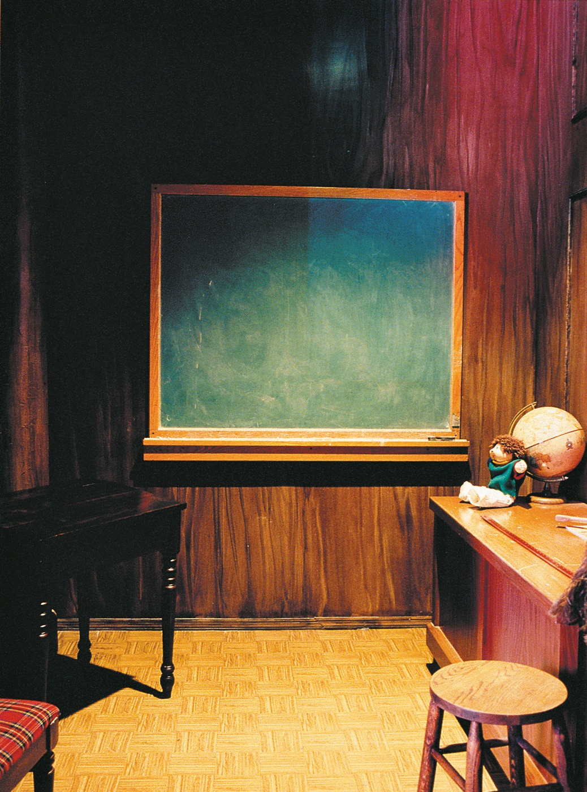
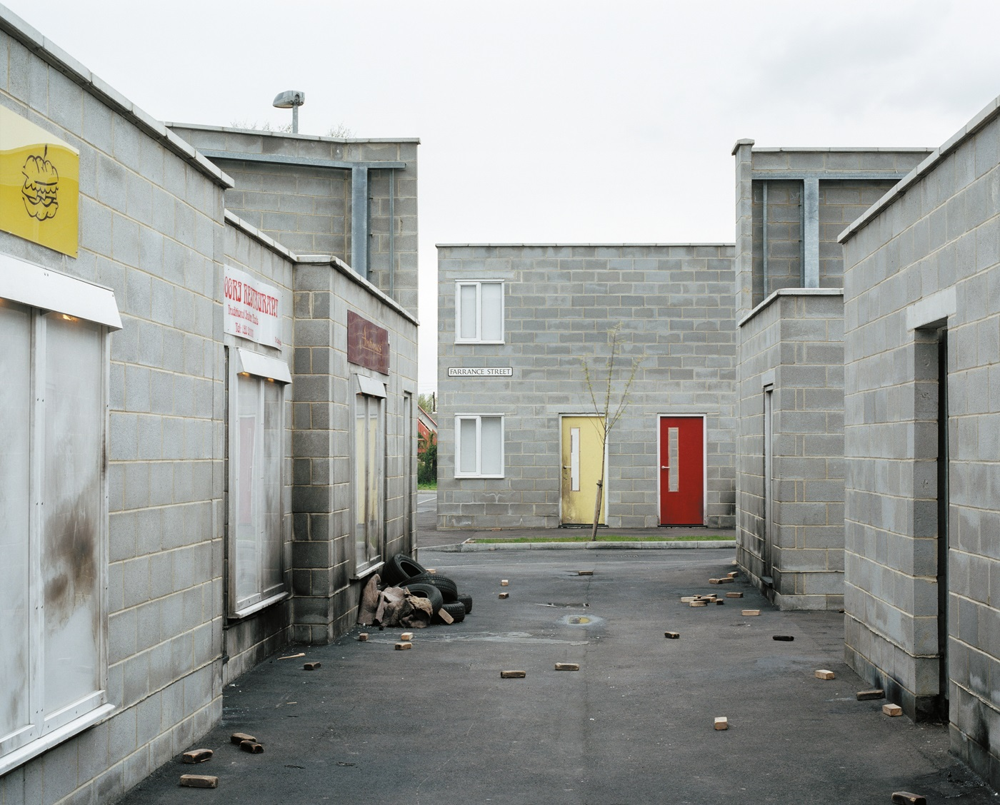
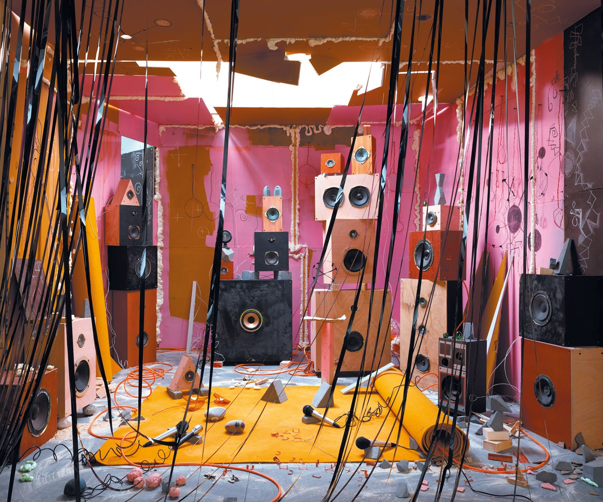

Arte contemporânea nos últimos quinze anos: imagem, conflito, memória e
futuro
Fechamento da disciplina
Não encerramos a história. Examinamos as condições do presente que a
obrigam a ser reescrita.
Esta aula abandona a busca por uma nova periodização. Em lugar de
perguntar qual movimento sucede qual outro, tomamos os últimos
quinze anos como campo de forças: guerras e deslocamentos,
pandemia de Covid-19, crise climática, redes de imagens, retração
de políticas públicas para a cultura e avanço de discursos
conservadores e autoritários.
A aula recusa converter obras em ilustrações de acontecimentos. A
pergunta é mais exigente: que formas, escalas, materiais, imagens
e modos de circulação se tornam necessários quando o presente
reorganiza quem pode aparecer, falar, ser lembrado ou desaparecer?
O contemporâneo reúne temporalidades, conflitos e meios distintos, sem
obedecer a uma narrativa única.Formulação pedagógica da disciplina, construída em diálogo com Katy
Hessel.
Katy Hessel: 2000–presente
Urgência não é tendência.
Na Parte Cinco, Hessel aproxima a revisão de narrativas coloniais,
a disputa por monumentos, a arte pública, a crise climática, as
guerras, a pandemia, #MeToo e Black Lives Matter. Seu gesto
decisivo é impedir que artistas mulheres, pessoas negras e
artistas queer sejam lidas como uma novidade passageira do mercado
ou da programação institucional.
Hessel escreve que artistas negligenciadas não são uma tendência.
Essa frase devolve à história da arte a responsabilidade por suas
próprias demoras: o problema não é a chegada tardia dessas
práticas, mas a duração das estruturas que as mantiveram fora de
coleções, exposições, currículos e mercados.
Para orientar a aulaQuando uma obra responde a um
presente violento, ela precisa representar literalmente o
acontecimento? Ou pode trabalhar por arquivo, monumento, retrato,
abstração, encenação, escala, ruína e circulação de imagens?
Três operações de arte no presente
Memória pública, mundo fraturado, presença reivindicada.
Monumento e colonialidade
Kara Walker
Em Fons Americanus (2019), a fonte monumental torna
visível a violência atlântica que monumentos celebratórios tendem
a apagar. A obra não corrige um símbolo isolado: questiona quem
ganha forma pública, quais dores são decorativas e que passado
sustenta o presente.
Informação e conflito
Julie Mehretu
Hessel lê as camadas de mapas, arquiteturas, sinais e linhas como
uma forma de tornar visível um mundo em transformação. A pintura
não fornece uma imagem transparente da guerra ou da migração; ela
organiza excesso, velocidade e fratura sem reduzir o mundo a uma
notícia.
Retrato e futuro
Zanele Muholi
Autorretrato e arquivo comunitário recusam a figura como objeto
passivo de observação. Em Somnyama Ngonyama, a imagem
produz presença, memória e futuro para vidas negras queer, cuja
visibilidade permanece vulnerável mesmo quando reconhecida pela
instituição de arte.
Guinada conservadoraDiscursos autoritários
frequentemente recorrem a imagens de povo, família, nação,
masculinidade, feminilidade e inimigo para fazer uma ordem social
parecer natural. Não há uma linguagem visual automaticamente
progressista. A questão é sempre quem aparece, sob quais convenções de
pertencimento, para qual comunidade imaginada e contra quem.
Fotografia em diálogo: Charlotte Cotton
Fotografar é construir as condições de uma cena.
Charlotte Cotton permite aprofundar um problema que atravessou a
disciplina: a fotografia nunca é somente registro. Em seu capítulo
“Once Upon a Time”, espaços vazios, simulados ou inteiramente
construídos tornam a câmera uma condição ativa da obra. A imagem
não chega depois do acontecimento. Em muitos casos, o
acontecimento existe para a imagem.
As três artistas a seguir não aparecem no livro de Hessel. Elas
entram como diálogo bibliográfico específico, para que a formação
em fotografia possa observar como desejo, policiamento, trabalho
de estúdio e imaginação narrativa se tornam questões de forma.

Classroom
Katharina Bosse, 1998. Série
10 Rooms to Have Sex In.
Cotton lê o quarto temático, fotografado vazio, como cruzamento
entre fantasia íntima, clichê e espaço institucionalmente
disponível. A ausência de corpos não elimina o desejo: torna
seus roteiros sociais mais legíveis.
Imagem e informações conforme Charlotte Cotton,
The Photograph as Contemporary Art, fig. 66.

Farrance Street
Sarah Pickering, 2004. Série Public Order.
A rua não é uma rua comum, mas um cenário de treinamento
policial. A fotografia documenta uma simulação de protesto,
violência e controle, tornando inseparáveis evidência, ficção
operacional e exercício de poder.
Imagem e informações conforme Charlotte Cotton,
The Photograph as Contemporary Art, fig. 67.

Flutter
Anne Hardy, 2017.
O cenário foi construído no estúdio para uma posição de câmera
determinada. Objetos encontrados e sinais de atividade fazem o
espaço parecer habitado, embora sua narrativa permaneça suspensa
e nunca se complete.
Imagem e informações conforme Charlotte Cotton,
The Photograph as Contemporary Art, fig. 70.
Outras duas entradas para a conversa
Rut Blees Luxemburg desloca a discussão para a cidade
noturna, a longa exposição e a luz ambiente, mostrando que a
paisagem urbana também organiza experiência e poder.
Desirée Dolron tensiona retrato, suspensão corporal e
duração em séries como Gaze e Xteriors. Elas
ampliam o núcleo sem serem atribuídas a Cotton nesta edição.
Recapitulação: o fim de uma narrativa única
Danto, Belting e Kátia Canton: três maneiras de suspender uma linha
reta.
Arthur Danto
O fim da arte
Em Danto, o “fim da arte” não significa que obras deixam de ser
produzidas. Indica o fim de uma narrativa que pretendia conduzir a
arte em uma única direção histórica. Nenhum estilo ou meio pode,
sozinho, representar a forma necessária do presente.
Hans Belting
O fim da história da arte
Belting interroga os limites da história da arte quando ela se
apresenta como uma sequência contínua, universal e fundada num
modelo ocidental de arte. Não desaparecem imagens ou pesquisa:
tornam-se inevitáveis a revisão dos objetos, dos métodos e das
cronologias.
Kátia Canton
Narrativas enviesadas
Canton propõe narrativas que não obedecem ao modelo de começo,
meio e fim. Tempos fragmentados, sobreposições, repetições e
deslocamentos continuam a narrar, mas não precisam resolver a
trama nem chegar a uma síntese única.
Esta aula não trata os três argumentos como equivalentes. Danto
formula uma questão filosófica sobre a narrativa da arte; Belting
desloca a questão para os limites historiográficos da disciplina;
Canton oferece uma ferramenta para imaginar como narrar sem
restaurar a linearidade que acabamos de criticar.
É nesse ponto que Hessel volta a ser decisiva. Seu livro tem uma
cronologia e assume seus recortes, mas também mostra que a
história muda quando se alteram artistas, meios, lugares e
relações de poder que a compõem.
Retrospectiva como constelação
Seis aulas, seis modos de tornar uma história insuficiente.
Aula 1Eva Hesse, Lygia Clark e Lygia Pape:
matéria, corpo e participação desorganizam a autonomia da
obra.Aulas 2 e 3Autoria, trabalho, contramonumento e memória mostram que produção e
instituição participam do sentido da obra.Aula 4Figura, arquivo e contra-arquivo exigem perguntar quem pode
aparecer, ser descrita e ser lembrada.Aula 5Pintura, sonho e temporalidade mostram que o passado não
desaparece: ele retorna como linguagem em disputa.Aula 6O presente transforma imagem, instituição e circulação em problemas
inseparáveis de guerra, pandemia, clima, violência e futuro.
A história da arte não vem depois das obras para explicá-las. Ela
participa das condições que fazem uma obra ser vista, preservada,
ensinada, reproduzida ou esquecida.Hipótese de trabalho construída ao longo da disciplina.
Suspensão final
A história é, e continuará a ser, reescrita dia após dia.Katy Hessel, “Onde estamos agora?”
Contar a arte contemporânea por meio das artistas não acrescenta
apenas nomes a uma história pronta. Muda os problemas, os meios,
as instituições e as relações de poder que definem aquilo que uma
história da arte consegue ver.
Referências e créditos
Leitura-base: HESSEL, Katy.
A história da arte sem os homens. Parte Cinco: “Escrita em
curso”, especialmente capítulos 16 a 19.
Leituras em diálogo: COTTON, Charlotte.
The Photograph as Contemporary Art. Londres: Thames &
Hudson, 2020. Capítulo 2, “Once Upon a Time”; DANTO, Arthur C.
After the End of Art. Princeton: Princeton University Press,
1997; BELTING, Hans. The End of the History of Art?. Chicago:
University of Chicago Press, 1987; CANTON, Katia.
Narrativas enviesadas. São Paulo: WMF Martins Fontes, 2010.
Informações e citações atribuídas a Hessel e Cotton seguem as
respectivas leituras. “Guinada conservadora”, “o presente em disputa”
e as hipóteses de trabalho são dispositivos pedagógicos da disciplina.